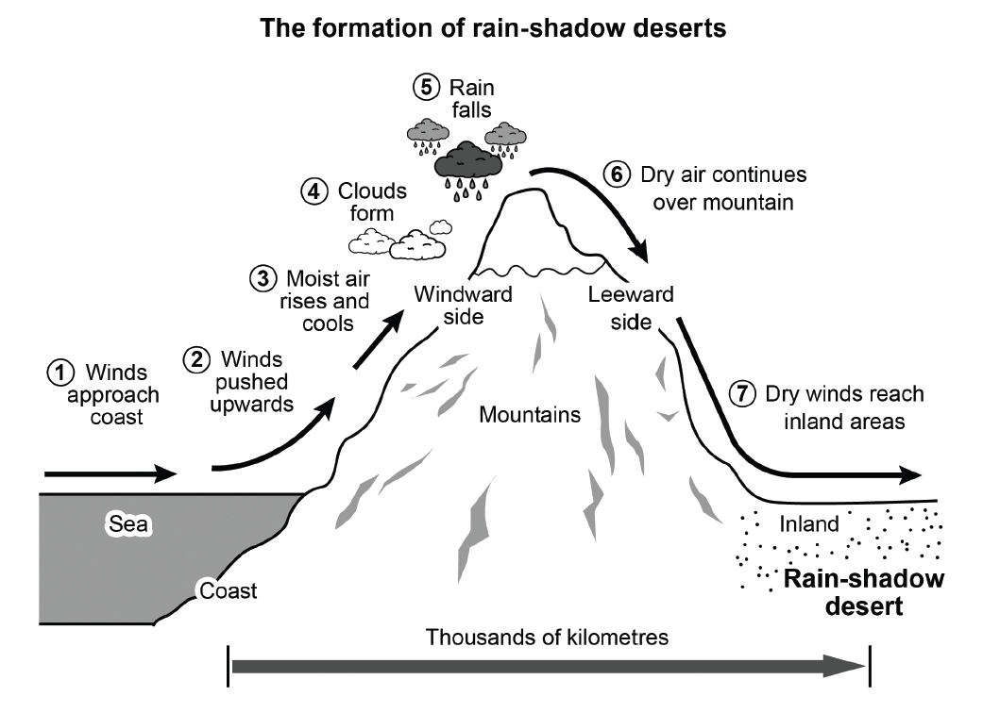

Task 1 — Rain-shadow desert formation (process)
The diagram below shows how one type of desert, known as a rain-shadow desert, is formed. Summarise the information by selecting and reporting the main features, and make comparisons where relevant.

The diagram illustrates the seven-stage process by which rain-shadow deserts are formed, from moist sea winds arriving at the coast to dry air reaching inland areas, across a distance of thousands of kilometres.
Overall, the process is driven by mountains intercepting moisture from the sea. The windward side receives heavy rainfall, while the leeward side receives none, and the inland region beyond the mountains is left dry and barren.
Initially, winds approach the coast across the sea and are then pushed upwards when they meet the mountains. As the moist air rises and cools on the windward side, clouds form above the summit, and rain falls there. Consequently, the air that continues over the mountain has already lost most of its moisture.
Finally, this dry air descends on the leeward side and continues inland as dry winds. Because almost all of the rain was released on the windward slopes, the two sides of the mountain differ sharply: the persistent dry winds eventually create the rain-shadow desert in the far inland region, while the windward side stays comparatively wet and green.
TA / TR：完整覆盖 7 步流程（风接近海岸 → 抬升 → 湿空气上升冷却 → 成云 → 降水 → 干空气翻越山脉 → 干燥风抵达内陆），迎风坡/背风坡降水对比点到；无杜撰细节，全部步骤与箭头方向来自原图。
CC / LR / GRA：四段式（Introduction → Overview → 前半流程 → 后半流程），衔接词 Initially / Finally / as / because 推进时序；LR 使用 rise and cool / windward side / leeward side / moisture 等流程词；GRA 简单句与复合句交替，被动语态（are pushed / is driven）适当使用，长句控制在 25 词左右。
moist air— 潮湿空气windward side— 迎风坡leeward side— 背风坡rises and cools— 上升并冷却clouds form— 云形成rain falls— 降雨dry winds— 干燥的风intercept— 拦截